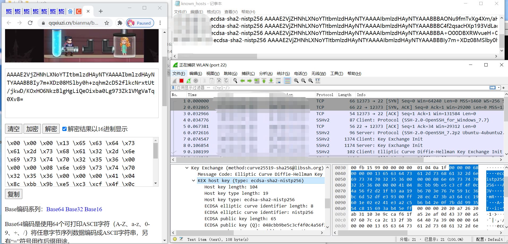

计划
《终极斗罗》和 “蜜罐”
之前看过有关 “蜜罐” 的概念，觉得这个玩意儿很有意思。
我觉得有意思的点在于，它这个概念有效降低了原本攻防的不对称性。攻击方就像恐怖分子一样，不管怎样失败，只要成功一次，那便是防守方无法承受的。
但如果存在一个东西，可以掣肘攻击方呢？比如了解攻击方的行为，包括使用的技术、所有的资源等等。
这两年来一直在看唐家三少的 《终极斗罗》（orz，我在艺术审美能力上的确还是个小学生），蓝轩宇（男主名）提出了 “将战场主动放在我们希望的地方” 这个概念，
将原本打算直攻天马星的深红之母引到了龙马星系的另一颗星球——天和星上。
在天和星上，有足够吸引深红之母（靠吞噬能量为生的位面）的生命能量、有龙马星系最强的军事科技、有龙马星系最富有的种族搭建的防御工事。
我看了之后寻思，这不就是个 “蜜罐” 吗？
- 有能够吸引攻击方的资源；
- 有强大的防御能力，是精心准备的陷阱；
- 与真正的资源存有距离；
- 攻击方需要一段时间才能识破陷阱；
- 攻击方在识破过程中会留下特征…
唐家三少，你知道 “蜜罐” 的，对吧？（
未来的我 要和 “蜜罐”
这学期有一门课，叫 系统安全与应用实验，第五周开始，我们从 扫描、入侵检测、个人防火墙 三个种类中选择一个来具体实现。
毫无疑问，想要水一个东西出来是很简单的。但我打算真正做点东西。一开始我也考虑过很多：
要不，我就利用 swoole 写个端口扫描吧
写起来估计方便，GitHub 上还没有类似实现要不，我写个分布式物理机状态监测？
但是感觉对我来说好麻烦啊，我应该没那个水平，对内核 API 的了解也不够
估计选了就是不停不过脑子地查东西罢了要不，我实现个小的 ufw？
我觉得也不好…… 我连 iptables 那几条链都没整明白过
……
最后我打算写一个 SSH-HoneyPot，并通过这个过程学习下 SSH 协议，弥补我上个学期在 SSH 这部分翘课带来的遗憾。
这个帖子就用来放 SSH 相关的细节备忘吧。
相关概念
这波第几层
毫无疑问，它是应用层协议，传输层使用 TCP，通常使用 22 端口，所以无论是拨号还是监听，都要指定 22：
1 | // some code on server |
Message Code / Message Number
（注：在 WireShark 里面称作 Message Code，RFC 里面好像统称 Message Number，下面我称之为消息数）
根据 RFC-4251 SSH Proto Archi，消息数可以分为五类：
- 传输协议(
SSH Transport Layer Proto) 中使用，在RFC-4253 SSH Transport Layer Proto中也有记载：- 1-19 是通用(
generic)； - 20-29 与算法相关，这里的算法相关不是指的 “加密 / 摘要算法”，而是 初始化(20)、新钥提示(21) 等；
- 30-49 与密钥交换(
kex) 有关，具体内容RFC中没有定义。比如我知道的，30 和 31 就与DH交换有关。- 注：上面的说法有误，但我并不想 “毁尸灭迹”，因为这是我不谨慎、没有做调查就妄下断论的结果，不应该被删掉。
- 我在读
go-crypto/ssh相关实现的时候，发现了一点奇怪的地方——消息数貌似并没有被特别重视（并不存在一种方法对应一种或几种特定消息数的情况）。我后面查了IANA的 相关条目，发现其中 30-49 是Reserved。此后我读了 RFC-4419 SSH-DH-Group-Ex 以及 RFC-5656 SSH-ECC-Alg-Int 的Message Numbers部分，发现在消息数上有重叠的地方，而且都指出：“They are in a name space private to this document and not assigned by IANA.” 以及 “The message numbers may be redefined by any key exchange method without requiring an IANA registration process.” - 综上，消息数和使用的交换方法是无特别大关联的。而
Wireshark或许是通过前面的Key Init(20)过程中双方给出的可接受交换方法序列来确定交换方法的吧？
- 1-19 是通用(
- 用户认证协议(
User Auth Proto) 中使用 50-127：- 50-59 是通用，最经典的是
SSH_MSG_USERAUTH_REQUEST(50)，客户端只能使用这个消息数； - 60-79 是
reserved（根据RFC-4252 SSH Auth Proto），为特定的交换方法设置，并且仅有服务器使用；
- 50-59 是通用，最经典的是
- 连接协议(
Conn Proto) 中使用 80-127：- 80-89 是通用的，在
RFC-4254 SSH Conn Proto中有明确的定义； - 90-127 也有部分定义(90-100)，与
channel有关，但是我不知道这是什么……
- 80-89 是通用的，在
Reserved / Local Ext：- 128-191
Reserved； - 192-255
Local Extensions。
- 128-191
Host Key in KEX

上面说到，KeyInit(20) 中交换了各种各样的可使用加密、摘要、密钥交换算法。在 Client 收到消息数为 KeyInit(20) 的消息之后，会开始交换密钥。
那么在我这里，是使用的 ECDH(30)，给出了密钥长度(Key Length) 和密钥本体。对应的，Server 要给出对应的响应，也就是上图。
ECDH-Reply(31)，我不打算注重具体细节，紧跟着消息数的就是 host key，里面记载着一系列的信息，需要注意的是，这些并不都记录到了 Client 的数据库中：
Host Key Length 并没有被包括在 Client 的 Host Key 中，如上面的记事本所示，是从 Type 开始的。
上图左边是对记事本中的 base64 解码后的十六进制表达，可与右侧对照。
在这个流程结束后，客户端并不会直接存储，而是通过询问是否愿意继续连接：
1 | The authenticity of host 'aaa.bbb.ccc.ddd (aaa.bbb.ccc.ddd)' can't be established. |
只有在这个时候输入 yes，才会有：
1 | Warning: Permanently added '47.101.154.133' (ECDSA) to the list of known hosts. |
也就是说 Client 中存储的、用来标识 Host 的 Key 的格式：
1 | aaa.bbb.ccc.ddd(ip) xxxxx-xxx(method) yyyyy...(host key, from Key Type to end) |
是在这个时候才被加入到客户端 known_hosts (我 Windows 是这个文件，不知道其他操作系统是什么) 中的。
而 写入这个主机密钥 猜测同样需要后面的交互，但是由于我没有解密 SSH 的手段（气死了，Windows 没有现成可用的代码，我也还没看到 SSH 是如何加密流量的）
最后说明一下：
仅仅对于 ECDH 这个算法，发出 ECDH(30) 的时候，后面附有客户端公钥 ECDH Public Key Client，而 ECDH-Reply(31) 的时候，在 Host key 后会附有 ECDH Public Key Server。
e.g. KEX in go-crypto-ssh
具体代码见：go-crypto/ssh/kex.go
这份代码最关键的就是 Client 和 Server 两个 dhGroup / ecdh / curve25519sha256 / dhGEXSHA 的方法。
我在这里就以我 Win10 首选的 ecdh 为例。
首先注意到两个方法的第一个参数的类型：packetConn 这个类型是实现了 readPacket/writePacket 两个方法的。并且，这个过程是同步的，我们可以根据这两种关于 packet 的读写方法来分割 Client / Server 不同的状态。
1. 从 Client 开始
Client 首先根据 ecdh 的两个公共参数 X, Y 生成 C 公钥：
1 | kexInit := kexECDHInitMsg{ |
生成之后直接写给 Server：
1 | serialized := Marshal(&kexInit) |
2. Server 接到之后
1 | packet, err := c.readPacket() |
会进行一系列的处理，总之会将下面这个结构体写给 Client：
1 | reply := kexECDHReplyMsg{ |
而其中的 serializedEphKey / hostKeyBytes / sig 是通过：
1 |
|
来计算得到的。
但是如果代码这么跑的话，和我实际抓到的包就不吻合了，所以我也很纠结，不明白到底怎么回事。
如果我要实现的话，我肯定是只实现最简单的 DH 交换。
3. Client 接到了 Server 的响应
1 | packet, err := c.readPacket() |
会根据 Server 传过来的 packet 计算一系列参数。多的就不说了。
默认的一些 Alg
下述的这些算法在 go-crypto/ssh 中得到支持，并且会在 SetDefaults (该方法在 Server.go 与 Client.go 中调用) 中设定默认值。Config 有关通信中使用的算法们2：
1 | RekeyThreshold // 类似生命 |
1. 密钥交换算法 (common.go-L63)
我的服务器上就是这样的：
1 | curve25519-sha256@libssh.org, |
2. 主机密钥类型 (common.go-L71)
common.go 里面没给推荐，下面是我服务器的：
1 | ssh-rsa, |
3. 加密算法 (common.go-L38)
1 | aes128-gcm@openssh.com, |
4. 摘要算法 (common.go-L84)
1 | hmac-sha2-256-etm@openssh.com, |
明显真正的 OpenSSH 支持更多算法……
5. 压缩算法 (common.go-L88)
1 | none |
不进行任何压缩。
SSH-Type: 20
确实层套得太多了。
client.go-L71 中暴露了 NewClientConn 这个函数，作为真正 crypto/ssh 的使用者，是会真正应用这个函数的。这个函数的作用正如它的注释所描述：
1 | NewClientConn establishes an authenticated SSH connection using c as the underlying transport. |
这个函数中会调用 clientHandshake 这个方法，该方法是 connection 接口中的方法：
1 | // clientHandshake performs the client side key exchange. See RFC 4253 Section 7. |
注：Section 7 就是讲的 Key Exchange(Algorithm Negotiation, Output from Key Exchange, Taking Keys Into Use)。
其中会调用 newClientTransport 来创建 connection 中位于 SSH 层面的客户端传输 Transport 的抽象。（我觉得是 Transport Proto 中的传输，而非传输层的传输）
1 | c.transport = newClientTransport( |
接着在 handshake.go-L123 中，newClientTransport 调用了 t.kexLoop，然后在 handshake.go-L278 调用了 t.sendKexInit，这个方法里面，是真正产生 Cookie 的地方：
1 | msg := &kexInitMsg{ |
其中使用的 kexInitMsg 在 message.go 中定义为：
1 | type kexInitMsg struct { |
注：真正向 conn 中写包的行为被包装在了 handshake.go 中的 pushPacket 里。
Auth
毫无疑问是很重要的。我觉得 client_auth.go 里面这个地方设计得挺巧妙的，当然，应该是我见识短了。拿 passwordCallback 举例子：
passwordCallback是返回(password string, err error)的 函数 类型；- 这个函数类型还有两个方法：
auth这个方法是用来验证身份的。入参类型是(session []byte, user string, c packetConn, rand io.Reader)；method基本上是个空方法，返回RFC-4252中的method name。
- 需要注意的是，上面两个方法定义在了
AuthMethod接口中，也就是说实现了上面两个方法的就满足这个接口，然后 这个接口就是如 RFC-4252 般验证身份的途径。
- 这个函数类型还有两个方法：
- 在同文件中，
Password和PasswordCallback这两个函数的返回类型与之相关，都是AuthMethod：PasswordCallback传入类型就是个实质上和passwordCallback没差别的类型，然后通过强转变成实现了AuthMethod接口的函数。Password挺精髓的，传入的是 口令(secret string)，但是构造了一个返回自身的函数，封成满足AuthMethod的passwordCallback。
1 | // Password returns an AuthMethod using the given password. |
比如可以这么写：
1 | // session, c and rand have been defined already |
在 auth 中，就可以通过：
1 | // assume that receiver: cb passwordCallback |
获得 password/secret 了。
按道理来说，由于 auth 这个函数名太抽象了，每一种 AuthMethod 都要对应实现一次，都需要特殊照顾。而对于 PasswordAuthentication 来说，如何将 Password(secret) 传给已经定义好入参类型的 auth 就成了个问题。
我之前是从来没有遇到这种解决方案的…… 可能和我之前接触的语言有关，我只对 C, Python 有一些了解，但这两门语言貌似没有直接给函数加方法的，要来也是函数的返回值为一个对象。但那可是对象，不是什么闭包函数，所以自然取不到那个函数里面的东西。
如果是 Python 的话，我想象不出是什么样子。
现在看来，这或许是这种问题的很常见。